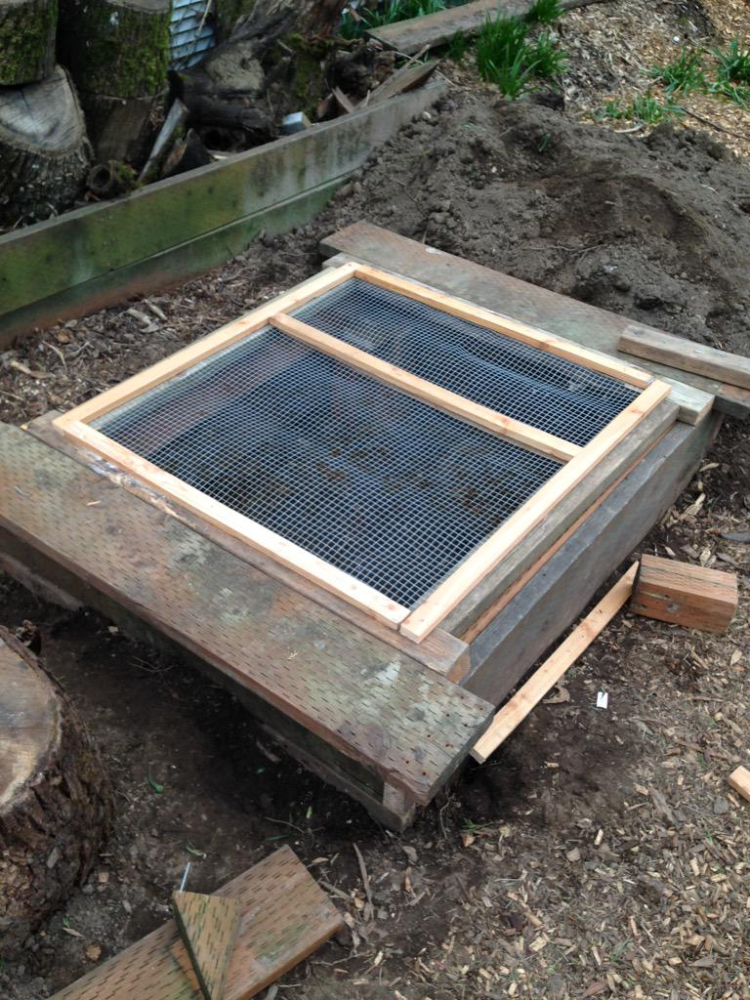

  	<div class="flex-wrap">
      
  	  <article class="tweet  " id="main">
  	    <p class="full_text">
  	      Not a security expert. Does my sandbox design look sufficient? Threat model includes cats. Lots of cats. <div class="gallery"><ul><li><a href="../../tweets_media/575468868644159489-B_x54cjUwAAoG29.jpg"></a></li></ul></div>
  	    </p>
  	    <p class="created_at">
  	      3/10/2015, 6:30:44 PM
  	    </p>
  	    <p class="favorite_count">Favs: 2</p>
  	    <p class="retweet_count">Retweets: 0</p>
  	    <a class="permalink" href="../575468868644159489">link</a>
  	  </article>

  	</div>
  </div>
